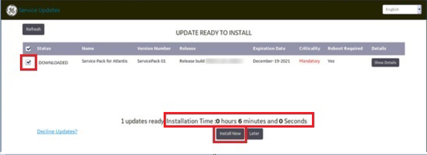
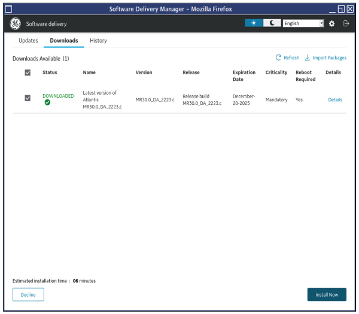
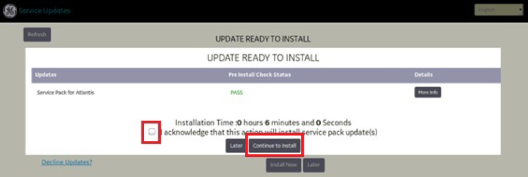
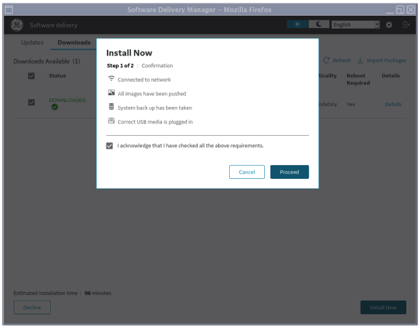
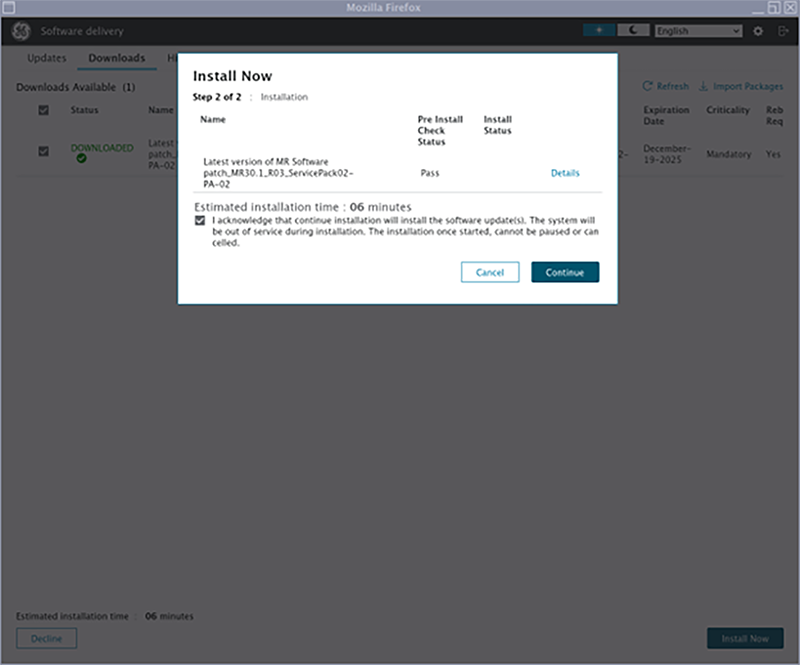

Installing updates from Remote Software Download (RSD) for DV29.1 through software version 30.1
Remote Software Download (RSD) is an installer application that helps to install new updates from service packs whenever they are released and pushed from the GE HealthCare back office.
Use these steps if you have GESoftwareInstaller Group privileges.
Note
A class M SSA key is required when the Role is "GEService". Please check the "Role" in the details of the eDelivery item before attempting to install the update.
Procedure
Open the RSD utility.
Open the Service Browser.
On the Utilities tab, select Remote SW download and click Click here to start this tool.
(For software version 30 and later) If the software update has not been downloaded automatically, it can be manually downloaded as follows.
From the Software Download Manager window Updates tab, select the check box next to the item you want to download.
Click Download Now.
Note The status icon will show the progress of the download. When the download is complete, it may briefly disappear from the Downloads tab and the status icon may temporarily change back to all grey while the download package is validated.
After the download completes, the update will show in the Downloads tab.
Note To view installation details related to the selected download, click Show Details. If the required role is "GEService", a class M key will be required to install the update.
Restart the system and log on to applications with an EA3 account that is part of the GESoftwareInstaller group.
Note
Software updates cannot be installed in root mode.
Service packs can only be installed after logging in but before the system software is fully up. If the system starts loading applications without showing the Software delivery window, the service pack is not ready to install.
In the software delivery window, select the check box next to the service pack and click Install Now.
Figure 1. Service Updates window for DV29.1

Figure 2. Software Delivery Manager window for software version 30 and later

After you click Install Now, a confirmation window appears.
Figure 3. Download acknowledgment dialog window for DV29.1

Figure 4. Download acknowledgment dialog window for software version 30 and later

Select the Acknowledge check box.
Click Continue to Install or Proceed.
(For software version 30 and later) A second confirmation window will show.
Select the Acknowledge check box.
Click Continue.
Figure 5. Second confirmation for software version 30

When the installation is completed (the message area shows INSTALLED), click Close to exit the window. The system continues with startup.